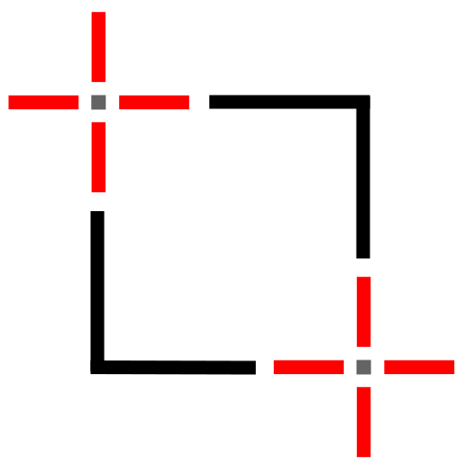
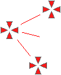
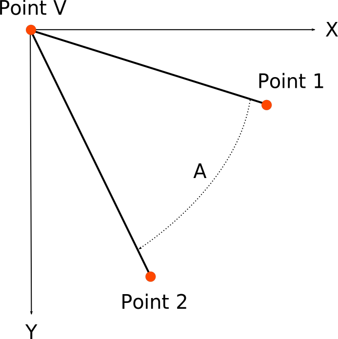
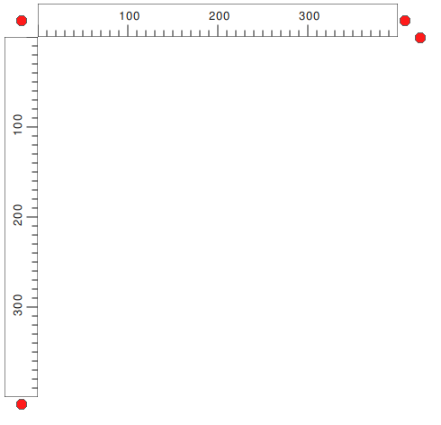
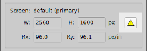
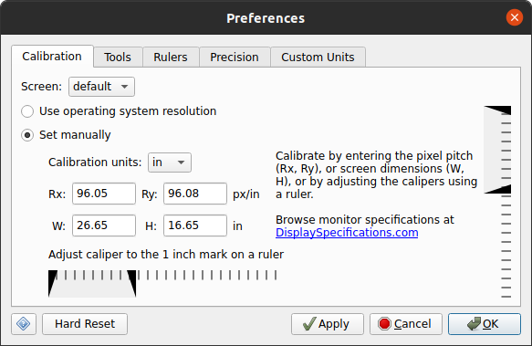
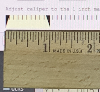
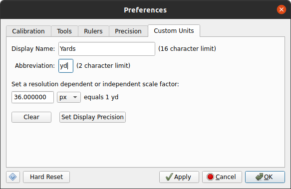
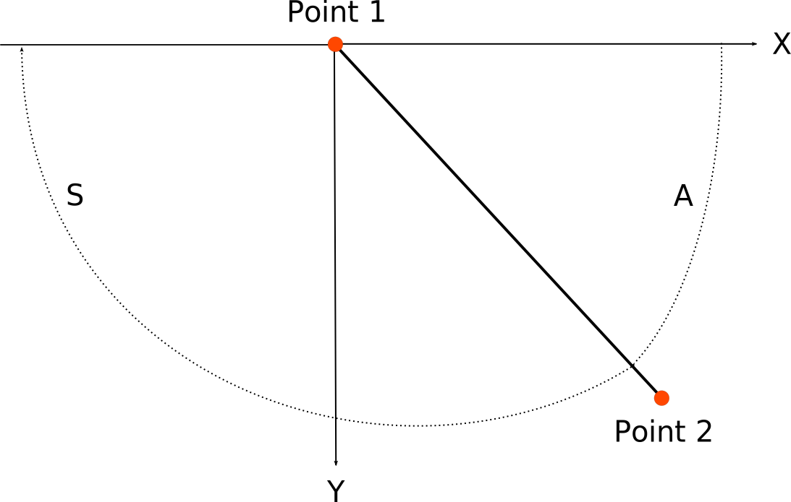

Meazure™ User Manual
Version @MAJOR_VERSION@.@MINOR_VERSION@
Copyright © 2023 C Thing Software
1. Overview
Meazure is a tool for easily measuring and capturing portions of the screen. Tasks such as measuring the size of a window, capturing an image, determining the color of a pixel, and determining the screen size can all be easily accomplished. Meazure provides a number of different tools for measuring and capturing the screen. In addtion, tool positions can be recorded to a file for future playback.
The Meazure user interface is organized into the following sections.

2. Getting Help
In addtion to this user manual, Meazure provides various kinds of interactive help.
- Tool Tips
- Many of the buttons and controls on the Meazure user interface provide tool tips. These short help messages are displayed when the mouse cursor hovers over a control (e.g. a button).
- Status Bar
- The status bar is located at the bottom of the Meazure window. Similar to a tool tip, the status bar shows short help messages. When the mouse cursor moves over a user interface item, a short description of that item is shown in the status bar. Unlike tool tips, status bar help is shown for more items (e.g. menu items) and there is no delay from when the mouse cursor moves over the item and the help is displayed.
- Help - F1
- Press F1 or select the Help item from the Help menu to open a browser showing this user manual.
- What's This? - Shift+F1
- Detailed context-sensitive help is available from the What’s This? item on the Help menu, by pressing Shift+F1, or by pressing the ? button on any dialog. When this form of help is selected, move the cursor over the item for which help is needed. If the cursor changes to an arrow with a question mark, click on the item and a popup window will display the detailed help. Click anywhere to dismiss the popup window. If the cursor is shown as a circle with a line through it, detailed help is not available for the item.
- Releases
- Select the Releases item on the Help menu to open a browser showing the current releases of Meazure. Select About on the Help menu to obtain the version of Meazure being used.
- Report an Issue
- Select the Report an Issue item on the Help menu to report a bug, make a feature request, or ask a question.
- About
- Version and contact information is available from the About item on the Help menu. In addition, a financial contribution can be made from the About dialog.
3. Measurement Tools
3.1 Tools Overview
Meazure provides a number of tools for measuring and capturing the screen. Each tool has its own unique characteristics and is designed for different measurement tasks. Because each tool is independent of the other tools, positioning one tool will not affect the positions of the other tools. This section provides an overview of the tools and links to the detailed information about each tool.
Only one of the following measurement tools can be selected at a time.
-
 Cursor Tool
Cursor Tool
- Tracks the position of the mouse cursor.
-
 Point Tool
Point Tool
- Provides a crosshair that can be positioned
-
 Line Tool
Line Tool
- Provides two crosshairs connected by a straight line.
-  Rectangle Tool
- Provides two crosshairs connected by a rectangle. Use this tool to measure and capture arbitrary portions of the screen.
- Circle Tool
- Provides two crosshairs, one at the center of a circle and the other on the circumference of the circle. Use this tool to measure radial distances on online maps. Arbitrary square portions of the screen can be captured using this tool.
-
 Angle Tool
Angle Tool
- Provides three crosshairs connected by two lines to form a protractor for measuring arbitrary angles on the screen.
- Window Tool
- Measures the window under the mouse cursor. Use this tool to measure and capture windows and their child windows.
The following tools can be used in conjunction with the above tools.
-
 Rulers
Rulers
- Provides a pair of orthoganal rulers (a.k.a. a ruler square).
-
 Screen Grid
Screen Grid
- Overlays a rectangular grid on the screen.
3.2 Tool Information
 All tool measurements are displayed in the tool information section of the user interface. The information
is displayed in text fields some of which have adjacent up and down buttons to change the displayed value.
Depending on the currently selected measurement tool, the text fields are shown in one of three states.
The value in fields with white backgrounds can be changed by editing the value, pressing the up or down
buttons, or pressing the up or down arrow keys while the field has the keyboard focus. The value in fields
with gray backgrounds and flack text are read-only. Fields where the text and labels are gray and barely
readable, are disabled.
All tool measurements are displayed in the tool information section of the user interface. The information
is displayed in text fields some of which have adjacent up and down buttons to change the displayed value.
Depending on the currently selected measurement tool, the text fields are shown in one of three states.
The value in fields with white backgrounds can be changed by editing the value, pressing the up or down
buttons, or pressing the up or down arrow keys while the field has the keyboard focus. The value in fields
with gray backgrounds and flack text are read-only. Fields where the text and labels are gray and barely
readable, are disabled.
Each text field has a label identifying the type of measurement (e.g. X1) and, if applicable, the units for the measurement (e.g. px). The measurements displayed depend on the currently selected measurement tool. The following are the general description of the measurements. See the individual tool sections for the measurements provided by that tool and their specific descriptions.
- X1, Y1 - Coordinate
- The x and y coordinates of the measurement tool's point 1.
- X2, Y2 - Coordinate
- The x and y coordinates of the measurement tool's point 2.
- XV, YV - Coordinate
- The x and y coordinates of the measurement tool's vertex or center point.
- W, H - Width, Height
- The width and height of a bounding rectangle around the measurement tool.
- D - Distance
- The distance along a line, diagonal, or radius.
- A - Angle
- The angle of a line, diagonal, radius, or protactor measurement.
- As - Aspect Ratio
- The aspect ratio of a bounding rectangle around the measurement tool.
- Ar - Area
- The area of a circle or bounding rectangle around the measurement tool.
3.3 Crosshairs
The Point, Line, Rectangle, Circle, and Angle tools use crosshairs for interactive positioning of the tool to perform measurements. A crosshair consists of four triangular sections pointing to an open center. All measurements are based at the center of the crosshair.
3.3.1 Crosshair Visual States
A crosshair can be in one of three visual states: default, hover and flashing.
- Default
- If the mouse is not positioned over the crosshair, it is in the default state. The crosshair will appear red under the default color scheme.
- Hover
- If the mouse is positioned over the crosshair, it is in the hover state. The crosshair will appear yellow under the default color scheme. In addition to a color change, the crosshair will display a data window indicating the current position of the crosshair. A tooltip may also appear indicating which measurement point the crosshair represents.
- Flashing
- When a new tool is selected, it will flash its crosshairs between the normal and selected states for a few seconds to help you locate it. The crosshairs can be flashed at any time by selecting the Find Crosshairs item on the Edit menu or by using the shortcut Ctrl+F.
The crosshairs can be hidden by selecting the Hide Crosshairs item on the View menu or by pressing Ctrl+B. Selecting the item or pressing the key sequence again will make the crosshairs visible. Note that it is not possible to interactively position tools when the corsshairs are hidden. See Moving a Crosshair for other ways to position crosshairs.
The colors and opacity of the crosshairs can be changed using the Tool Preferences panel.
3.3.2 Moving a Crosshair
Measurements are taken by moving a crosshair to the desired position on the screen. There are many ways to position a crosshair including dragging using the mouse and single pixel movement using the keyboard.
- Mouse dragging
- The fastest way to position a crosshair is by dragging it using the mouse. Position the mouse over the crosshair so that it is in the hover state. Press the left mouse button and drag the crosshair to the desired position. The position of the crosshair will be continuously displayed and the magnifier will display the area around the crosshair as it is being dragged
- Text field editing
- The crosshair can be positioned by entering a value in the text fields of tool information section of the user interface. Click on a text field and enter a positive or negative numeric value. The crosshair will move as the value is edited.
- Text field keys
- Click on a text field and use the keyboard up and down arrow keys to move the crosshair by one pixel. The value displayed in the text field corresponds to a change of one pixel converted to the currently selected units.
- Text field buttons
- Press the up or down arrow button adjacent to the text field to move the crosshair by one pixel. The value displayed in the text field corresponds to the change in pixels converted to the currently selected units. Pressing and holding an arrow button will repeat the change. Pressing the Ctrl key while pressing an arrow button will move the crosshair by ten pixels.
- Keyboard arrows
- Even if the focus is not in a text field, the keyboard arrow keys can be used to move the crosshairs by a single pixel. Press Ctrl+1, Ctrl+2 and/or Ctrl+3 along with an arrow key will move the corresponding crosshair a single pixel in the direction of the arrow. Multiple crosshairs can be moved at the same time by pressing multiple numbers. For example, pressing Ctrl+1+2 and the up arrow moves the Point 1 and Point 2 crosshairs up one pixel.
- Move to cursor
- A crosshair can be moved to the current location of the mouse cursor using Ctrl+Shift+1, Ctrl+Shift+2 or Ctrl+Shift+3. The number specifies which crosshair to move. For example, if the Line tool is selected, pressing Ctrl+Shift+2 moves the line's second point crosshair to the current mouse location. If the Angle tool is selected, pressing Ctrl+Shift+3 moves the vertex of the angle to the current mouse location.
3.3.2 Reading a Crosshair Position
The current position of a crosshair can be read in two places. The first is in the tool information section. The second place is the data window associated with the crosshair. The Line and Rectangle tools have two crosshairs called Point 1 and Point 2 respectively. The Circle tool has two crosshairs called the Vertex at the center of the circle, and Point 1 on the circumference of the circle. The Angle tool has three crosshairs called Point 1, Point 2, and Vertex. Whether a crosshair is Point 1, 2 or the vertex can be determined either by looking at the data window or the tooltip associated with the crosshair.
3.4 Data Window
A data window is a popup containing tool-dependent measurement information. When the Cursor tool is selected, a data window is displayed next to the mouse cursor. A data window is displayed when hovering over a crosshair.
The data window can be hidden by selecting the Hide Popup Data Window item on the View menu. Selecting the item again will make the data window visible.
The opacity of the data window can be changed using the Tool Preferences panel.
3.5 Cursor Tool
 The Cursor tool allows you to track the position of the mouse cursor. Both the data window attached to the
cursor and the tool information section display the position of the cursor.
Note that the position of the cursor cannot be changed using the position text fields. The
magnifier shows the area around the cursor as well as the color of the pixel
currently under the cursor hotspot. The Cursor tool does not affect normal operation of the mouse cursor.
The Cursor tool allows you to track the position of the mouse cursor. Both the data window attached to the
cursor and the tool information section display the position of the cursor.
Note that the position of the cursor cannot be changed using the position text fields. The
magnifier shows the area around the cursor as well as the color of the pixel
currently under the cursor hotspot. The Cursor tool does not affect normal operation of the mouse cursor.
The tool information section displays the following measurements for the Cursor tool:
- X1, Y1
- The position of the cursor.
To select the Cursor tool, choose the Cursor item on the Tools menu or click on the Cursor tool icon on the toolbar.
3.6 Point Tool
The Point tool allows you to position a crosshair anywhere on the screen and measure the position. Both the data window attached to the crosshair and tool information section display the position of the crosshair. The magnifier shows the area around the crosshair as well as the color of the pixel at the center of the crosshair.
The tool information section displays the following measurements for the Point tool:
- X1, Y1
- The position of the Point 1 crosshair.
To select the Point tool, choose the Point item on the Tools menu or click on the Point tool icon on the toolbar.
3.7 Line Tool
 The Line tool allows you to position two crosshairs anywhere on the
screen and measure the positions, distance and other information about the line connecting them. Both
the data window attached to the crosshairs and tool information section
display the measurement information. The magnifier will shows the area around
the crosshair that is being moved as well as the color of the pixel at the center of that crosshair.
The Line tool allows you to position two crosshairs anywhere on the
screen and measure the positions, distance and other information about the line connecting them. Both
the data window attached to the crosshairs and tool information section
display the measurement information. The magnifier will shows the area around
the crosshair that is being moved as well as the color of the pixel at the center of that crosshair.
The tool information section displays the following measurements for the Line tool:
- X1, Y1
- The position of the Point 1 crosshair.
- X2, Y2
- The position of the Point 2 crosshair.
- W, H
- The width and height of the bounding rectangle for the line, defined as and respectively
- D
- The length of the line connecting the two crosshairs, defined as
- A
-
 The angle of the line relative to the x-axis. Using the
default coordinate system, positive angles are measured clockwise from the
positive x-axis to the line from Point 1 to Point 2.
The angle of the line relative to the x-axis. Using the
default coordinate system, positive angles are measured clockwise from the
positive x-axis to the line from Point 1 to Point 2.
- As
- The aspect ratio of the bounding rectangle for the line, defined as
- Ar
- The area of the bounding rectangle for the line, defined as
Note that the calculation of W, H, D and Ar is always performed in pixel units and the result is converted to the currently selected display units.
As described in the Moving a Crosshair section, the mouse or keyboard can be used to position the crosshairs. In addtion, the entire line can be moved by pressing the Ctrl key while dragging one of the crosshairs.
To select the Line tool, choose the Line item on the Tools menu or click on the Line tool icon on the toolbar.
3.8 Rectangle Tool
The Rectangle tool allows you to position two crosshairs anywhere on the screen and measure the enclosing rectangle. In addition, the screen area bounded the rectangle can be captured to the clipboard. Both the data window attached to the crosshairs and tool information section display the rectangle measurement information. The magnifier shows the area around the crosshair that is being moved as well as the color of the pixel at the center of that crosshair.
The tool information section displays the following measurements for the Rectangle tool:
- X1, Y1
- The position of the Point 1 crosshair
- X2, Y2
- The position of the Point 2 crosshair.
- W, H
- The width and height of the rectangle, defined as and respectively
- D
- The length of the diagonal, defined as
- A
-
The angle of the diagonal relative to the x-axis. Using the
default coordinate system, positive angles are measured clockwise from the
positive x-axis to the line from Point 1 to Point 2
- As
- The aspect ratio of the rectangle, defined as
- Ar
- The area of the rectangle, defined as
Note that the calculation of W, H, D and Ar is always performed in pixel units and the result is converted to the currently selected display units.
To capture the screen area bounded by the rectangle see Screen Capture.
As described in the Moving a Crosshair section, the mouse or keyboard can be used to position the crosshairs. In addtion, the entire rectangle can be moved by pressing the Ctrl key while dragging one of the crosshairs.
To select the Rectangle tool, choose the Rectangle item on the Tools menu or click on the Rectangle tool icon on the toolbar.
3.9 Circle Tool
The Circle tool allows you to position two crosshairs, one for the center of a circle and the other for a point on the circumference of the circle. The screen area contained in the square bounding the circle can be captured to the clipboard. Both the data window attached to the crosshairs and tool information section display the measurement information. The magnifier shows the area around the crosshair that is being moved as well as the color of the pixel at the center of that crosshair.
The tool information section displays the following measurements for the Circle tool:
- XV, YV
- The position of the crosshair at the center of the circle
- X1, Y1
- The position of the Point 1 crosshair on the circumference of the circle
- W, H
- The width and height of the bounding square, defined as
- D
- The radius of the circle
- A
-
 The angle of the radius relative to the x-axis. Using the
default coordinate system, positive angles are measured clockwise from the
positive x-axis to the line from center of the circle to Point 1 on the circumference.
The angle of the radius relative to the x-axis. Using the
default coordinate system, positive angles are measured clockwise from the
positive x-axis to the line from center of the circle to Point 1 on the circumference.
- Ar
- The area of the circle, defined as
Note that the calculation of W, H, D and Ar is always performed in pixel units and the result is converted to the currently selected display units.
To capture the screen area bounded by the circle see Screen Capture.
As described in the Moving a Crosshair section, the mouse or keyboard can be used to position the crosshairs. In addtion, the entire circle can be moved by pressing the Ctrl key while dragging one of the crosshairs.
To select the Circle tool, choose the Circle item on the Tools menu or click on the Circle tool icon on the toolbar.
3.10 Angle Tool
 The Angle tool provides a protractor for measuring arbitrary angles on the screen. The tool provides three crosshairs that can be positioned anywhere on the screen. One crosshair is located at the vertex of the angle and the other two crosshairs define the angle. The measured angle is on the same side as the angle bisector line. Both the data window attached to the crosshairs and the tool information section display the angle measurement information. The magnifier shows the area around the crosshair that is being moved as well as the color of the pixel at the center of that crosshair.
The tool information section displays the following measurements for the Angle tool:
- X1, Y1
- The position of the Point 1 crosshair
- X2, Y2
- The position of the Point 2 crosshair
- XV, YV
- The position of the angle vertex crosshair
- A
-  The angle formed by the lines from the vertex to Point 1 and Point 2. The angle is measured on the side of the tool that contains the angle bisector line. Using the default coordinate system, positive angles are measured clockwise from the Point 1 line to the Point 2 line
As described in the Moving a Crosshair section, the mouse or keyboard can be used to position the crosshairs. In addtion, the entire angle can be moved by pressing the Ctrl key while dragging one of the crosshairs.
To select the Angle tool, choose the Angle item on the Tools menu or click on the Angle tool icon on the toolbar.
3.11 Window Tool
The Window tool allows you to measure the size of any top level window on the screen. In addition, the window contents can be captured to the clipboard. The window being measured is identified by a red rectangular border. Both the data window attached to the window border and the tool information section display the window measurement information. Note that the position of a cannot be changed using the position text fields.
The tool information section displays the following measurements for the Window tool:
- X1, Y1
- The position of the upper left corner of the window
- X2, Y2
- The position of the lower right corner of the window
- W, H
- The width and height of the window, defined as and respectively
- D
- The length of the window diagonal, defined as
- A
-
The angle of the diagonal relative to the x-axis. Using the default coordinate system, positive angles are
measured clockwise from the positive x-axis
- As
- The aspect ratio of the window, defined as
- Ar
- The area of the window, defined as
Note that the calculation of W, H, D and Ar is always performed in pixel units and the result is converted to the currently selected display units.
To capture the window contents see Screen Capture.
To select the Window tool, choose the Window item on the Tools menu or click on the Window tool icon on the toolbar.
3.12 Rulers
 To assist in measuring items on the screen, a set of horizontal and vertical rulers can be displayed. Rulers can be used in conjunction with any other measurement tool. The rulers provide indicators that show the positions of the current measurement tool. For example, when the Cursor tool is selected, the ruler indicators will show the current position of the mouse cursor when it moves within the area contained by the rulers.
The postion, length and angular orientation of the rulers can be changed using the circular grab handles located around the rulers.
Position: The rulers can be dragged to a new position on the screen using the circular grab handle at the origin between the two rulers.
Length: The length of each ruler can be changed by dragging the circular grab handle at the end of each ruler.
Rotation: The rulers can be rotated by dragging the circuler grab handle at the end corner of the horizontal ruler.
The colors and opacity of the rulers can be changed using the Ruler preferences.
To select the rulers choose the Rulers item on the Tools menu or click on the rulers icon on the toolbar.
3.13 Screen Grid
A rectangular grid can be overlaid on the screen to assist in measuring. The grid will not affect mouse cursor interaction with other windows. By default, the grid cover all screens and the cells of the grid are square. The cell spacing, grid size, origin and orientation can be adjusted by selecting the Screen Grid Settings item from the Tools menu.
To select the screen grid, choose the Screen Grid item on the Tools menu or click on the screen grid icon on the toolbar.
3.13.1 Screen Grid Settings
The screen grid visual parameters can be adjusted by selecting the Screen Grid Settings item from the Tools menu. Note that the screen grid is displayed when the screen grid setting dialogs is opened.
- Cell spacing
- The size of a grid cell can be adjusted using the Cell Spacing section of the grid settings dialog. The width and height of the cells can be adjusted using the corresponding text fields. The units for the cell size can be specified using the units drop down menu. If the horizontal and vertical dimensions are linked, the cell height will be kept the same as the cell width.
- Grid Orientation
- The origin of the screen grid can be changed using the X and Y fields. The overall width and height of the grid can be changes using the W and H fields. The grid can be rotated using the A field to specify the rotation angle in degrees relative to the x-axis.
4. Units
4.1 Working With Units
Meazure offers a broad selection of units in which to display measurements. In addition, custom units can be defined. When selecting measurement units, it is important to understand the difference between resolution independent and resolution dependent units. For the purposes of this manual, screen resolution is defined as the number of pixels per physical distance on the screen (e.g pixels per inch). A pixel is assumed to be square in shape.
Resolution independent units do not depend on a physical distance along the screen. The only resolution independent units offered by Meazure are pixels. Because they are resolution independent, pixel units require no calibration.
Resolution dependent units depend on a physical distance along the screen. All units offered by Meazure other than pixels, are resolution dependent and require calibration to ensure accuracy.
The following units are provided to for length measurements.
- Pixels
- The screen coordinates reported by the operating system are in pixels. These are resolution independent units are therefore require no calibration.
- Twips
- A twip is a resolution dependent unit defined as 1/1440 of an inch. These units are used by Microsoft, OpenOffice and LibreOffice.
- Points
- A point is a resolution dependent unit defined as 1/72 of an inch. These units are typically used to specify font sizes.
- Picas
- A pica is a resolution dependent unit defined as 1/6 of an inch. These units are typically used in text layout programs.
- Inches
- The British imperial and US customary system unit of length measurement. This is a resolution dependent unit.
- Centimeters
- A centimeter is a resolution dependent unit in the Metric system. One 2.54 centimeters equal 1 inch.
- Millimeters
- A millimeter is a resolution dependent unit in the Metric system. One 25.4 millimeters equal 1 inch.
- Custom
- If the above units do not meet your measurement needs, custom units can be defined. See the calibration seciton for instructions on how to define custom units.
The following units are provided to for angle measurements.
- Degrees
- One complete rotation around a circle is equal to 360 degrees.
- Radians
- One complete rotation around a circle is equal to radians.
Length and angle units are selected using the Units menu. The first time a resolution dependent unit is selected, you will be prompted to perform a resolution calibration, if one has not already been done.
Note that regardless of the currently selected measurement units, interally all measurements are performed using pixels and then converted into the current units.
4.2 Calibration
As described in the Working with Units seciton, all units except pixels are resolution dependent. This means that the screen resolution (pixels per physical distance) must be used to calculate measurements. By default, the screen resolution reported by the computer's operating system is used. Typically, this resolution is an approximation of the actual screen resolution, which results in resolution dependent measreuments being inaccurate. To address this inaccuracy, Meazure provides the capability to manually set the screen resolution.
Calibration should be performed the first time Meazure is used or whenever the display monitors are replaced. Meazure displays a warning the first time resolution dependent units (e.g. inches) are selected if clabiration has not been performed. In addition, a warning button is displayed in the Screen Information section if the operating system screen resolution is being used. There are a number of ways to open the calibration preferences page.
- Preferences
- Select Preferences from the Edit menu. Once the preferences dialog is open, click on the Calibration tab.
- Calibration warning dialog
- A warning dialog is displayed the first time resolution dependent units are selected if calibration is required on any screen. Press the Calibrate button to open the calibration preference page.
- Calibration warning button
-  If the resolution reported by the operating system is being used on any screen, a button with a warning icon is displayed in the upper right corner of the Screen Information section. Press that button to open the calibration preference page. The button is no longer displayed when a manually calibrated resolution is being used on all screens.

Once the calibration preference page is open, use the Screen drop down menu to select the display screen to calibarte. Select Set manually and perform calibration in one of two ways.
- Direct Entry
- Using this method of calibration, the resolution of the selected screen can be directly entered either as the pixel pitch (pixels per specified calibration units, e.g. px/in) or the overall screen dimensions in the specified calibration units. Either the pixel pitch or the screen dimension needs to be specified because one can be calculated from the other. An excellent source of screen hardware specifications can be found at DisplaySpecifications.com.
- Ruler
-
Obtain a physical ruler. If you are using a ruler marked in inches, select in on
the Calibration units drop down menu. If the ruler is in centimeters, select
cm for the units.
 Hold the ruler against the screen such that it is directly below the horizontal calipers. Using the mouse, drag the right caliper such that the distance from the left caliper is one inch or two centimeters according to the ruler. Use one inch if inches were selected for calibration units. Use two centimeters if centimeters were selected for the calibration units. The value displayed between the calipers during the drag is the pixel pitch (e.g. pixels / inch). Repeat this process for the vertical caliper.
Move the preferences dialog to any other screens and repeat this process.
Calibration using a ruler should only be performed on the display screen showing the calibration preference page.
Do not use the Ruler tool to calibrate the resolution. The Ruler tool relies on the calibration to display its markings. Similarly, do not use any other computer generated ruler to perform the calibration. Always use a physical ruler.
Once the screens have been calibrated, press OK to apply all preference settings and dismiss the dialog, or press Apply to only apply the settings but leave the dialog open.
4.3 Custom Units

Meazure provides many units in which to perform measurements. However, measurement units other than those provided (e.g. yards), custom units can be defined. To define custom units either select the Define Custom item on the Units menu, or select the Preferences item on the Edit menu and then click on the Custom Units tab.
Only one set of custom units may be defined at a time. To define custom units, perform the following steps:
- Enter a name for the units in the Displayable Name text field. This name is used on the Units menu. For example, to define yards as a custom unit, enter Yards for the name of the units.
- Enter an abbreviation for the units in the Abbreviation field. The abbreviation for yards could be yd.
- Custom units can be defined as resolution independent (i.e. based on pixels) or resolution dependent (i.e. based on inches or centimeters). Use the units drop down menu to select the basis for the custom units. The basis units for yards would be inches.
- Enter a scale factor for converting from the custom units to the basis units. The scale factor for yards would be 36 because there are 36 inches to a yard.
- Press the Set Display Precision button to set the number of decimal places for various types of measurements using the custom units. See Precision Preferences for details on specifying display precisions.
- Press OK to apply all preference settings and dismiss the dialog, or press Apply to only apply the settings but leave the dialog open.
Once custom units have been defined, they can be select on the Units menu.
To remove custom units, open the custom units preference page and press the Clear button followed by the OK or Apply button. The custom units item on the Units menu will be disabled.
5. Screen Coordinate System
5.1 Default Coordinate System
The operating system reports screen coordinates to Meazure using its coordinate system. The origin of this coordinate system (i.e. x=0, y=0) is located in the top left corner of the screen. The positive x-axis points to the right and the positive y-axis points down from the origin. This is the default coordinate system used by Meazure for all coordinate measurements.
A marker is placed at the origin of the coordinate system to visually identify its location and indicate the direction of the positive x and y axes. The origin marker can be hidden by selecting the Hide Origin Marker item on the View menu.
5.2 Inverting the Y-Axis
 The coordinate system can be changed to the traditional Cartesion orientation where the origin is in the
bottom left corner of the screen, the positive y-axis point up, and the x-axis points to the right from the
origin. To change to this coordinate system, select the Invert Y item from the
View menu. Meazure will present all coordinate measurements using this coordinate system.
The coordinate system can be changed to the traditional Cartesion orientation where the origin is in the
bottom left corner of the screen, the positive y-axis point up, and the x-axis points to the right from the
origin. To change to this coordinate system, select the Invert Y item from the
View menu. Meazure will present all coordinate measurements using this coordinate system.
5.3 Moving the Origin
The origin of the coordinate system can be moved to anywhere on the screen. To set a new origin position, move Point 1 of any tool to the desired position and either select Set Origin from the View menu or use the shortcut Ctrl+N. If the Cursor tool is being used, the origin is set to the current mouse cursor position. The origin marker is shown at the new location. To restore the origin to its default position, select Reset Origin from the View menu.
5.4 Supplemental Angle
 By default, angles are measured clockwise from the positive x-axis. Selecting the Supplemental Angle item from the View menu changes the angle measurements to , where .
6. Screen Information
...
7. Magnifier
...
8. Color Information
...
9. Screen capture
...
10. Preferences
...
10.1 Calibration Preferences
For details on the calibration preferences and how to perform units calibration, see the Calibration section.
10.2 Tool Preferences
...
10.3 Ruler Preferences
...
10.4 Precision Preferences
...
10.5 Custom Units Preferences
For details on defining custom units, see the Custom Units section.
10.6 Hard Reset
...
11. Configuration Files
...
12. Position Logging
...